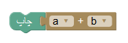

ساختار حلقه و استفاده از آن
خب بچه ها حلقه یعنی چه؟ حلقه مثل چیزی که پدر مادراتون دست کردن و با هم ازدواج کردن یا مثلا حلقه ای که ما تو حیاط مدرسه یا خونه دور هم جمع میشیم و دست هم دیگرو میگیریم و برای بازی حلقه درست میکنیم ولی حلقه توی برنامه نویسی به چه دردی میخوره؟ حلقه به شرایطی گفته میشه که در اون یه کاری بارها و بارها و بارها تکرار میشه. حلقه به انگلیسی میشه Loop . حالا فرض کنید که ما یه حلقه داریم که بینهایت بار تکرار میشه و فرض کنید ما یه دونده ماراتن هستیم که میخوایم این مسیر رو بدوییم و برنده بشیم. از نقطه اولیه شروع میکنیم و زمین دایرست و دوباره به نقطه اول برمیگردیم و همین عمل دوباره تکرار میشه چون این مسیر انتها نداره به این عمل عمل حلقه بی نهایت در برنامه نویسی میگویند. حالا ممکنه یه سوال براتون به وجود بیاد که این به چه دردی میخوره اصلا؟! اگه بازی انگری بردز رو بازی کرده باشین دیدین که تو هر مرحله چند پرنده وجود داره و مثلا شما یکیشونو شلیک میکنین و به خوک سبزا نمیخوره و یکی دیگه رو شلیک میکنین و دوباره نمیخوره و دوبار دوباره دوباره شلیک میکنین به این عمل حلقه میگن. خب بچه ها این موضوع موضوع مهمیه و باید حتما یادش بگیرید.
 آشنایی و استفاده از متغیر ها
آشنایی و استفاده از متغیر ها
عزیزم فرض کن که پدربرزگ به تو 5 تا سیب بده و مادربزرگ هم به تو 6 تا سیب بده.با کمک متغییر ها نشون بده چند تا سیب داری.